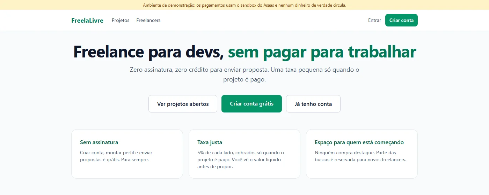
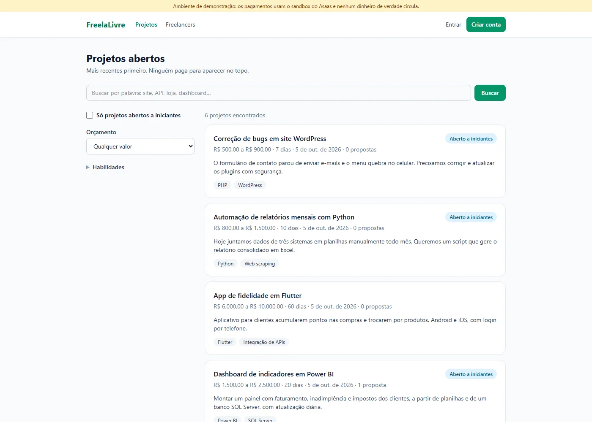
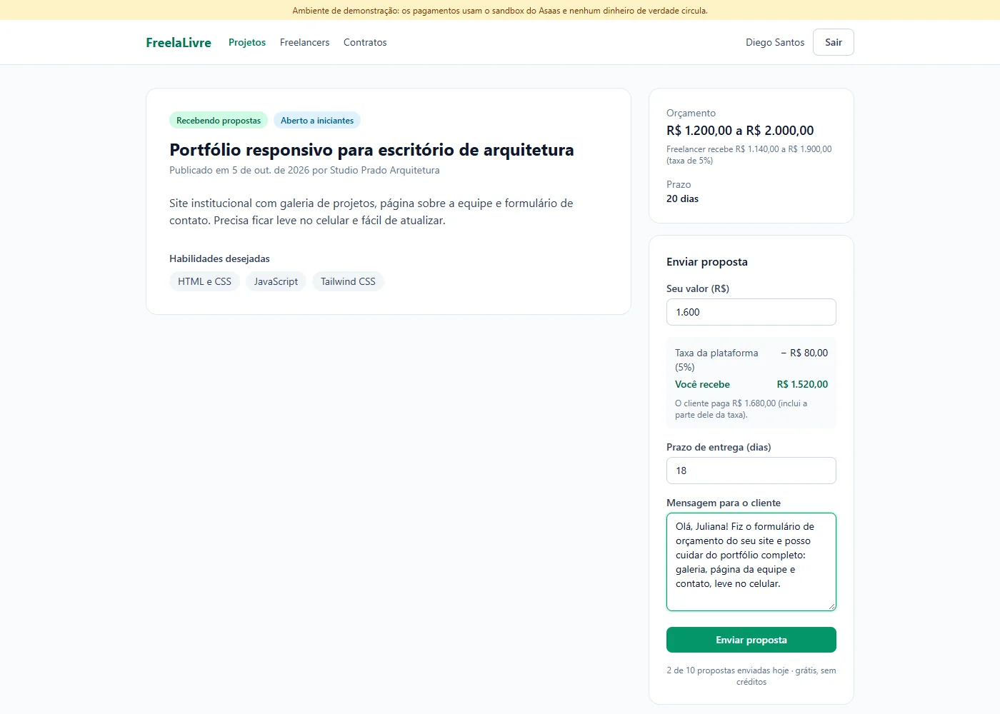
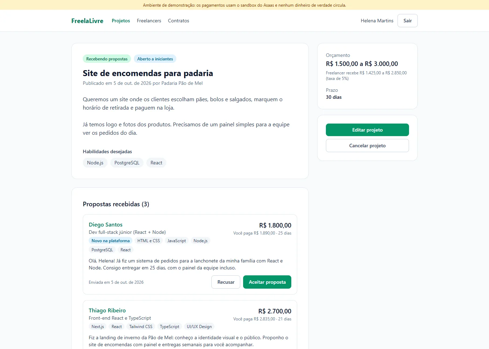
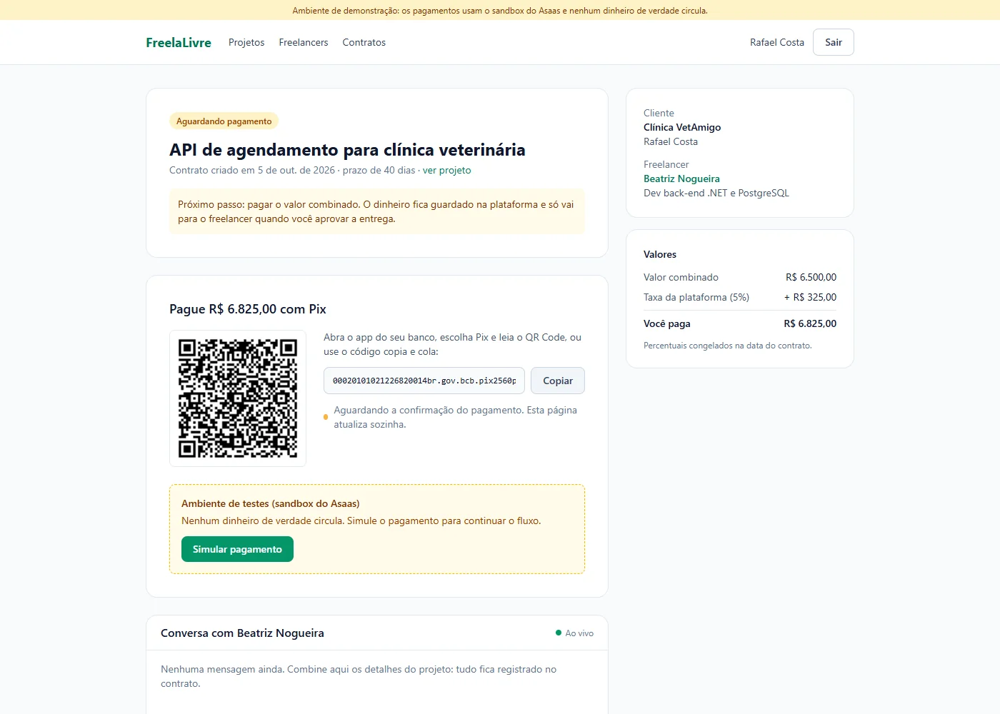
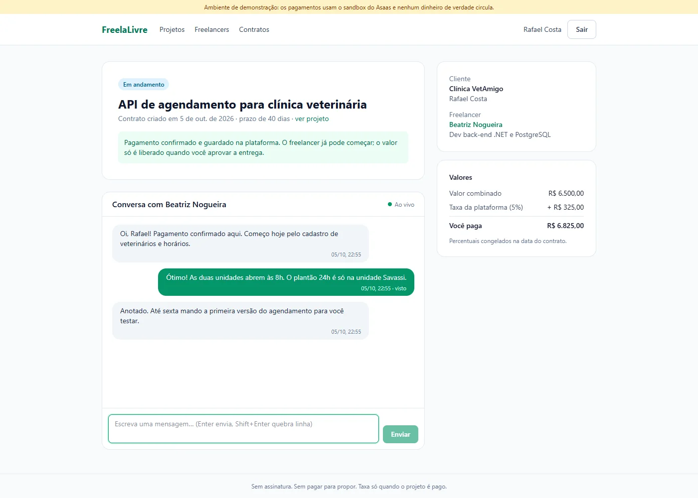
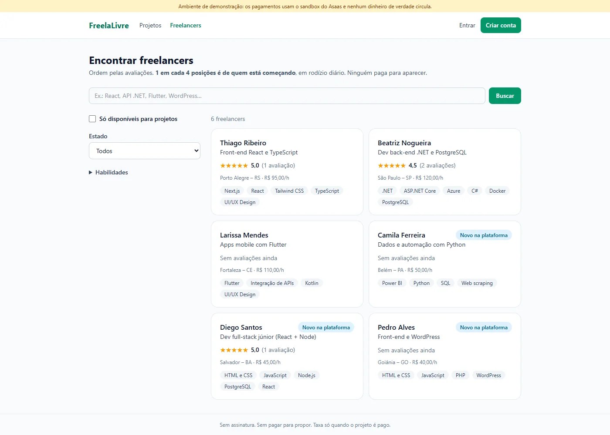
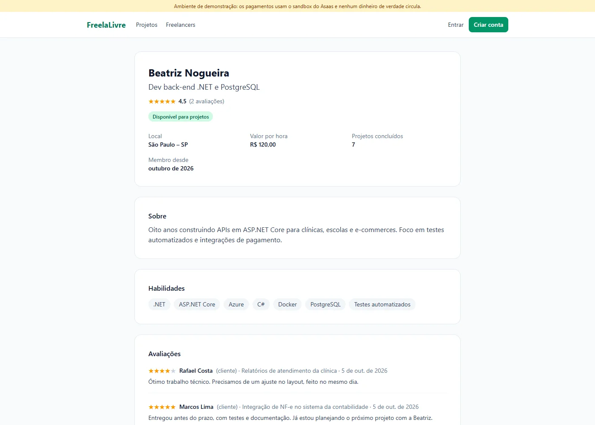
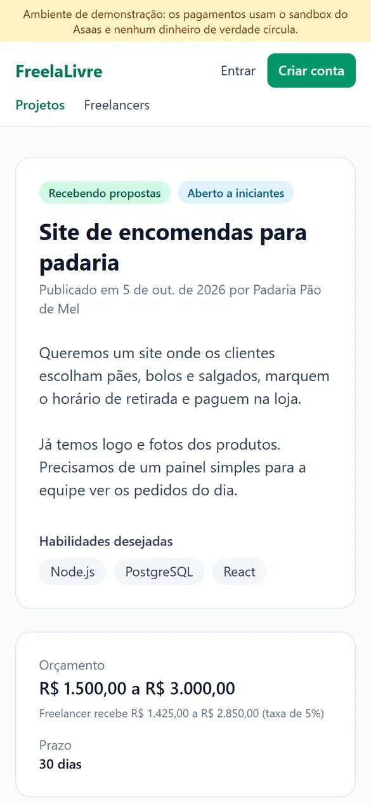
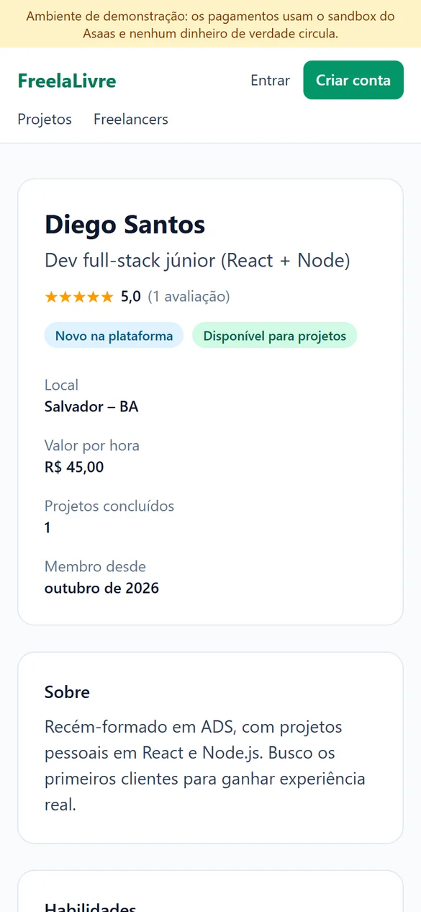

🤝 FreelaLivre
Freelance para devs, sem pagar para trabalhar
Visão Geral do Projeto
O FreelaLivre é uma plataforma de freelance para desenvolvedores onde ninguém paga para propor nem para aparecer. Não há assinatura nem créditos: a plataforma ganha uma taxa de 5% de cada lado, só quando o projeto é pago. E parte das posições da busca é reservada para quem está começando.
A ideia nasceu de uma dor real: ao procurar trabalho como freelancer, a maioria das plataformas cobra assinatura ou dá vantagens enormes a quem paga, e quem está começando fica invisível justamente quando ainda não tem renda. O projeto cobre o fluxo completo, da publicação do projeto ao repasse por Pix, e está publicado com pagamentos no sandbox do Asaas (nenhum dinheiro de verdade circula).

Telas da Plataforma







No celular


Stack Tecnológica
Backend
Frontend
Pagamentos e infraestrutura
Funcionalidades Principais
Projetos e Propostas
O cliente publica escopo, faixa de orçamento, prazo e habilidades, e pode marcar o projeto como "aberto a iniciantes". O freelancer vê na hora a taxa e quanto recebe. Limite de 10 propostas por dia, igual para todos, sem créditos pagos.
Contrato com Valores Congelados
Ao aceitar uma proposta, as outras são recusadas e nasce o contrato com valores e percentuais congelados. Mudar a taxa no futuro não afeta trabalho já combinado.
Pix em Custódia
O cliente paga por Pix e o dinheiro fica guardado até a entrega ser aprovada. Sem resposta em 7 dias, a entrega é aprovada automaticamente e o repasse vai para a chave Pix do freelancer.
Chat em Tempo Real
Conversa dentro do contrato com SignalR, confirmação de leitura e atualização ao vivo quando o pagamento é confirmado ou a entrega muda de estado.
Avaliações às Cegas
Cliente e freelancer se avaliam sem ver a nota do outro. Ela só aparece quando os dois avaliaram ou depois de 14 dias, e quem foi avaliado pode responder publicamente.
Vitrine para Iniciantes
1 a cada 4 posições da busca de freelancers vai para quem tem menos de 3 contratos, em rodízio diário. Nada que se compre melhora o ranking ou a visibilidade.
Arquitetura
Navegador (React 19 + TanStack Query)
│ HTTP + cookie │ WebSocket
▼ ▼
┌──────────── Render: um container Docker ────────────┐
│ ASP.NET Core 10 Minimal APIs SignalR /hubs/chat │
│ Workers: aprovação automática e repasses │
│ wwwroot: build do React (mesmo endereço, sem CORS) │
└───────────────┬─────────────────────────┬───────────┘
▼ ▼
PostgreSQL (Neon) Asaas: Pix, transferências
└─ webhook ─▶ API
- ✅ Três camadas: domínio puro (sem EF nem ASP.NET, 100% testado), infraestrutura (EF Core, Identity, cliente do Asaas) e API organizada por feature
- ✅ Gateway de pagamento atrás de uma interface: o Asaas real em produção e um gateway falso nos testes de integração
- ✅ Sessão segura em SPA: JWT de 15 minutos só em memória e refresh token em cookie
HttpOnly+SameSite=Strict, com rotação a cada uso e só o hash no banco - ✅ Deploy contínuo: Dockerfile em três estágios e publicação no Render só depois que o CI do GitHub Actions passa
- ✅ LGPD: o CPF/CNPJ do pagador vai direto ao Asaas e não fica guardado; a chave Pix do freelancer só sai da API mascarada
Desafios Técnicos Superados
-
1. Nunca pagar o freelancer duas vezes
O repasse grava o estado "Enviando" antes de chamar o Asaas, com concorrência otimista pelo
xmindo PostgreSQL. Uma recusa explícita é reagendada com espera exponencial; um resultado incerto (timeout, erro 5xx) fica parado para conferência em vez de ser reenviado. Um teste simula a transferência "perdida" e prova que ela não se repete. - 2. Webhook que não confia no corpo O token é validado em tempo constante, eventos repetidos são descartados pelo id e a cobrança é consultada no Asaas antes de confirmar qualquer pagamento. Sem webhook, uma reconciliação na consulta do status cobre a lacuna.
- 3. Dois aceites ao mesmo tempo Token de concorrência no projeto e índices únicos garantem que um projeto não feche com dois freelancers: quem chega depois recebe 409. Testado com requisições paralelas reais contra o PostgreSQL.
- 4. Ranking justo sem nada pago Experientes são ordenados por média bayesiana, para uma única nota 5 não passar na frente de 4,8 em 50 trabalhos. Os novatos entram em rodízio diário estável (hash do id + dia), e as avaliações escondidas são filtradas na própria consulta SQL para nenhuma média vazar uma nota ainda às cegas.
-
5. Bugs que só o mundo real mostrou
A data de vencimento do Asaas chegava com offset
-03:00e o Npgsql recusava gravar; "1.500" era lido como 1,5 no campo de valor; a ordenação de texto mudava entre Windows e Linux. Cada um virou teste, e o front calcula o valor líquido em centavos inteiros com os mesmos casos de teste do back-end.
Aprendizados e Skills Demonstradas
Backend .NET
- Minimal APIs por feature
- EF Core com concorrência otimista
- Workers em background
Pagamentos
- Pix e transferências com Asaas
- Webhooks idempotentes
- Repasses à prova de duplicidade
Qualidade
- 348 testes (domínio, API e front)
- Integração com PostgreSQL real
- CI no GitHub Actions
Produto
- Ideia, modelo de receita e plano técnico
- Interface responsiva em pt-BR
- Deploy com Docker, Render e Neon
Experimente o FreelaLivre
Crie uma conta de cliente ou de freelancer e teste o fluxo completo. Os pagamentos usam o sandbox do Asaas. No plano gratuito, o primeiro acesso depois de um tempo parado pode levar uns 30 a 60 segundos. O código-fonte é privado.